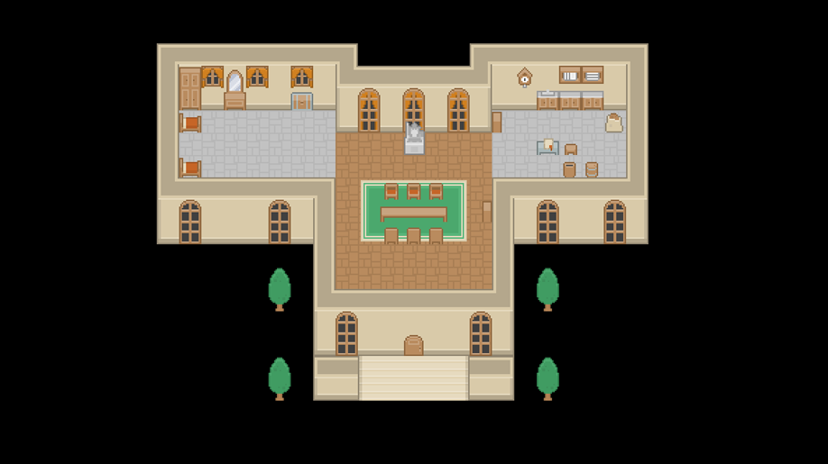

The Future of DM Screens Has a Voice.
GenesisDM: Fantasy Assistant is a local-first Windows DM companion for D&D 5e (2024), Daggerheart, and system-agnostic play. Narrate a scene and GenesisDM can use local speech recognition and an Ollama-powered LLM to suggest matching art and music.
Before you download: Ollama is required for local LLM features and must be installed separately. GenesisDM checks for it and downloads its model, but does not install Ollama. Install Ollama • Read setup and privacy details
Run your whole world by the sound of your own voice.
No hotkeys. No alt-tabbing out of the story to hunt for the right track. GenesisDM listens while you narrate and quietly keeps the table's scene, mood, and memory in sync with what you're actually saying.
Just talk.
Say "a misty, mysterious forest path opens before you," and GenesisDM's local speech engine hears it, pulls out the scene, and brings up matching art and a moody track before you finish the sentence.
It remembers so you don't have to.
Every NPC you invent and every thread you open feeds a living world-bible that autonomously updates as the story is told — and carries forward into your next session.
The tone follows your words.
Describe a fight and the table turns tense. Describe a tavern and it turns warm. Matches are confidence-scored, so GenesisDM only jumps in when it's sure — never a jarring wrong guess.
Yours alone.
Speech transcription and scene extraction both run locally on your PC — no cloud API, no subscription. What's said at your table stays at your table.
What it feels like at the table.
Concept renders built directly from GenesisDM's real interface theme — the trial build's actual look and color palette.

UI chrome is illustrative, built from the trial build's real theme — not literal screen captures. The forest scene shown is real starter-pack art bundled with the app (Pexels license, Francesco Ungaro). The tactical map is real CC0 art (Kenney, kenney.nl) shown for illustration — not yet part of the starter pack.
Everything you run a session with.
Live Voice & Scene Matching
- Real-time mic capture with fully local Whisper transcription
- Local LLM scene-descriptor extraction via Ollama — no cloud calls
- Confidence-scored auto-matching that never swaps on a weak guess
- Manual override search for picking a scene yourself
- Enrolled-voice speaker attribution, so cross-talk won't drive the scene
- Phone-mic-per-player groundwork for pinpoint speaker ID
- A diagnostic session log reviewing how narration became scenes
Every Tab You Need
- Narrative: live transcript, NPC Assist, rolling Session Recap
- Combat & Map merged into one view, auto-numbered enemies, persistent NPC/Enemy log
- Map: drag/pan/zoom, markup & walls, Fog of War, Measure Distance, Check Cover, experimental Dynamic Lighting
- Clocks: Blades-in-the-Dark-style segmented trackers
- Mechanics: freeform house-rules tracker per system
- Notes: browse/search a connected local Obsidian vault, follow wikilinks, and add manual session logs; Obsidian is optional
- Obsidian is the supported note destination today; Notion is planned, not available in this build
- One System dropdown (D&D 5e 2024 / Daggerheart / Generic) drives Combat, Map & Mechanics together
- Global Undo, colorblind-safe palette, adjustable text size
Player Companion & Room Service
- One-click "Open Room" — no separate server to run
- Player Companion: a phone-first live mirror of scene, map, combat & clocks
- QR-code join plus a live "Players (N)" connected count
- Pre-session lobby with a waiting-room roster before the main panel opens
- Player-uploaded avatars shown as their own map token
- Per-player fog overrides — let a scout see ahead of the party
- Remote players off your LAN: a one-click Cloudflare Tunnel (recommended, no router setup), or self-hosted WireGuard for full control
Setup, Trial & Profiles
- Guided first-run setup wizard — every step skippable, nothing re-downloads
- Local DM profiles remember your last system & accessibility settings
- 30-day trial with a soft, local-only lock — never DRM on your data
- One-click feedback + diagnostic summary, no file uploads required
- Ships with a starter asset pack, so matching works on first launch
Your world, extracted as you tell it.
Campaign Crafter is GenesisDM's newest piece, and it's still finding its final shape — testers are seeing it early, rough edges and all. Here's what's already working:
- Voice-driven entity extraction — NPCs, Factions, Locations, Creatures & Items, each with a "why" that gives it narrative weight
- Nothing lands automatically — every extraction waits in a queue for your Confirm / Edit / Discard
- A living storyboard that auto-draws relationship lines between entities that share tags
- Scenes & Threads — your run-of-show and your throughlines, tracked in one place, session to session
- One-click Run Sheet export — turn your own worldbuilding into a real session plan
First-run requirements
- Windows 10 or 11; 8 GB RAM minimum, 16 GB recommended; allow about 6 GB free disk space.
- Install Ollama separately for local LLM features. GenesisDM checks for it and downloads its model; it does not install or start Ollama.
- Internet is needed for first-run model downloads. Budget 10–20 minutes on a typical connection; slow connections can take longer.
- Setup steps can be skipped, but AI-dependent features may not work until their local runtime/models are ready. A microphone is optional.
Your creative work & network choices
- Voice transcription and LLM inference run on this computer with the default local Ollama host; a user-configured remote Ollama host receives prompts sent to that server.
- Automatic update checks contact GitHub by default; turn them off or check manually in Settings.
- Feedback opens a Google Form only when you choose Send Feedback. The optional diagnostic summary is copied for you to review and submit.
- Same-Wi-Fi play stays on your network. Opt-in Cloudflare remote play routes player traffic through Cloudflare; WireGuard is the self-hosted alternative.
- Obsidian connects to a vault folder you choose. GenesisDM itself does not sync that vault; a separate vault-sync service you configure has its own privacy behavior. GenesisDM writes only inside its app-owned vault folder. Notion is planned, not currently supported.
Full setup, privacy, and network details • Obsidian and note integrations
Ready to run a session your table's never seen before?
Free trial build for Windows. Budget 10–20 minutes for first-run model downloads. Ollama is required for local LLM features and must be installed separately; GenesisDM does not install it.
Voice transcription and LLM inference run locally with the default local Ollama host. Setup downloads models; optional update checks, feedback, and remote-player networking use the network.
Download the Trial BuildInvite your fellow DMs in ten seconds.
Scan the code to send them straight here, or copy a ready-made invite for your group chat.